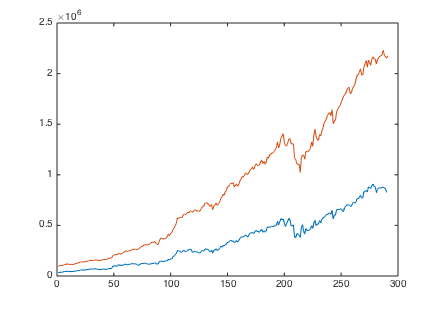

nion
nionCombined Factors - Detail! Detail! Detail!
Combined Factors - Details Details Details
The advantage of sequential test is I can add a lot more observation and control points along the way and reveal the inner work of the factor portfolio.
Contents
ToDos
Here I'm going to add more practical considerations into fun_sequential_backtest(), to take into account of the followings:
- number of long securities x
- transaction cost x
- turnover consideration x
- rebalancing frequency x
- extreme movement
- missing price data x
- penny stock x
- margin requirement x
- funding cost x
- hedging ratio x
- leverage ratios x
I will also insert a full audit trail in fun_sequential_backtest(), including:
- average portfolio factor loading
- position x
- transaction history x
- margin x
- anormaly handling history
- transaction cost history x
- funding cost history x
- round up of positions x
imshow('details.jpg');
Preparation
Let's load the data from ..
load('../data_equity_list_us.mat'); load('../data_field_list.mat'); load('../data_historical_data_us.mat'); load('../rfr_ts.mat'); load('../cap_benchmark_ts.mat'); load('../spx_ts.mat');
take data sample, load data & the list
index = datasample(1:1300,1000,'Replace',false);
px = fun_load_price(history_us, equity_list_us, index);
px = fun_clean_data(px);
list = equity_list_us(index,:);
load observations
mom_ts = fun_calculate_mom(px); pb_ts = fun_load_observations(history_us, equity_list_us, index,'pb'); cap_ts = fun_load_observations(history_us, equity_list_us, index,'cap'); beta_ts = fun_load_observations(history_us, equity_list_us, index,'beta'); grossmargin_ts = fun_load_observations(history_us, equity_list_us, index,'gm'); turnover_ts = fun_load_observations(history_us, equity_list_us, index,'turnover'); roa_ts = fun_load_observations(history_us, equity_list_us, index,'roa'); leverage_ts = fun_load_observations(history_us, equity_list_us, index,'leverage');
calculate score
score_mom_ts = fun_calculate_score(mom_ts,list,'sectorsort',px); score_pb_ts = -fun_calculate_score(pb_ts,list,'sectorsort',px); score_cap_ts = -fun_calculate_score(cap_ts,list,'sectorsort',px); score_beta_ts = -fun_calculate_score(beta_ts,list,'sectorsort',px); score_leverage_ts = -fun_calculate_score(leverage_ts,list,'sectorsort',px); score_roa_ts = fun_calculate_score(roa_ts,list,'sectorsort',px); score_grossmargin_ts = fun_calculate_score(grossmargin_ts,list,'sectorsort',px); score_turnover_ts = fun_calculate_score(turnover_ts,list,'sectorsort',px); score_leverage_ts = fillts(score_leverage_ts,0); score_roa_ts = fillts(score_roa_ts,0); score_grossmargin_ts = fillts(score_grossmargin_ts,0); score_turnover_ts = fillts(score_turnover_ts,0); score_quality_ts = score_leverage_ts+score_roa_ts+score_grossmargin_ts+score_turnover_ts; score_quality_ts = fun_combine_score(score_quality_ts);
Trim
score_roa_ts = score_roa_ts(75:end);
score_leverage_ts = score_leverage_ts(75:end);
score_grossmargin_ts = score_grossmargin_ts(75:end);
score_turnover_ts = score_turnover_ts(75:end);
score_mom_ts = score_mom_ts(75:end);
score_pb_ts = score_pb_ts(75:end);
score_cap_ts = score_cap_ts(75:end);
score_beta_ts = score_beta_ts(75:end);
score_quality_ts = score_quality_ts(75:end);
score_mom_ts = fillts(score_mom_ts,0);
score_pb_ts = fillts(score_pb_ts,0);
score_cap_ts = fillts(score_cap_ts,0);
score_beta_ts = fillts(score_beta_ts,0);
score_quality_ts = fillts(score_quality_ts,0);
score_ts = {score_mom_ts; score_pb_ts; score_cap_ts; score_beta_ts; score_quality_ts};
px = px(75:end);
Combine score
score_weight = [0.2 0 0.4 0.1 0.3]; score_combined_ts = score_mom_ts*score_weight(1) + score_pb_ts*score_weight(2) + score_cap_ts*score_weight(3) + score_beta_ts*score_weight(4) + score_quality_ts*score_weight(5); score_combined_ts = fun_combine_score(score_combined_ts);
There is much less securites than you expeced.
score_mat = fts2mat(score_mom_ts); score_mat(not(isnan(score_mat)))=1; plot(nansum(score_mat,2)); hold on; score_mat = fts2mat(score_pb_ts); score_mat(not(isnan(score_mat)))=1; plot(nansum(score_mat,2)); hold on; score_mat = fts2mat(score_cap_ts); score_mat(not(isnan(score_mat)))=1; plot(nansum(score_mat,2)); hold on; score_mat = fts2mat(score_beta_ts); score_mat(not(isnan(score_mat)))=1; plot(nansum(score_mat,2)); hold on; score_mat = fts2mat(score_quality_ts); score_mat(not(isnan(score_mat)))=1; plot(nansum(score_mat,2)); hold on; score_mat = fts2mat(score_combined_ts); score_mat(not(isnan(score_mat)))=1; plot(nansum(score_mat,2)); hold off;
Benchmark
portfolio_weight_eq_weight_ts = fun_portfolio_weight_sector_neutral(score_combined_ts,'equalweight'); portfolio_rt_ts = fun_portfolio_return(px, portfolio_weight_eq_weight_ts); benchmark = [100; 100*exp(fts2mat(cumsum(portfolio_rt_ts)))]; benchmark_ts = fints(px.dates, benchmark,'EqualWeightIndex');
The usual approach
risk neutral using equal weighted benchmark as hedge
portfolio_weight_ts = fun_portfolio_weight_sector_neutral(score_combined_ts,'longonly'); portfolio_capital_ts = fun_sequential_backtest_autoadjust(100000, px, benchmark_ts, portfolio_weight_ts,false); plot(portfolio_capital_ts); hold on; snapnow; sqrt(12)*sharpe(fts2mat(tick2ret(portfolio_capital_ts)),0) sqrt(12)*std(fts2mat(tick2ret(portfolio_capital_ts)))
ans =
1.4157
ans =
0.0442
risk neutral using SnP as hedge
portfolio_capital_ts = fun_sequential_backtest_autoadjust(100000, px, spx_ts, portfolio_weight_ts,false);
plot(portfolio_capital_ts);
hold on;
snapnow;
sqrt(12)*sharpe(fts2mat(tick2ret(portfolio_capital_ts)),0)
sqrt(12)*std(fts2mat(tick2ret(portfolio_capital_ts)))
ans =
1.2332
ans =
0.0704
risk neutral using cap weighted benchmark as hedge
portfolio_capital_ts = fun_sequential_backtest_autoadjust(100000, px, cap_benchmark_ts, portfolio_weight_ts,false);
plot(portfolio_capital_ts);
hold off;
snapnow;
sqrt(12)*sharpe(fts2mat(tick2ret(portfolio_capital_ts)),0)
sqrt(12)*std(fts2mat(tick2ret(portfolio_capital_ts)))
ans =
1.1457
ans =
0.0732
Let's go sequential
I follow the actually steps to evaluate the strategy
- at a given date, I check the market to get current price, portfolio weight, benchmark index level and risk free interest rate.
- I pick the top N securities according to their scores, and give them equal weight. The remaining are assigned 0 weight.
- I decide the appropriate position for each securities. If it is rebalancing date, the position is calculated afresh, otherwise previous position is carried over. If carried over position has no price at current date, the position is set to zero. This means there is a certain portion of cash position. In case of 50 securites, the cash position could be 2%~6%, half of the time.
- position is decided by taking leverage ratio & current capital into consideration.
- position is then rounded to whole number, this has minimum impact on the result.
- hedge position is decided by taking volatility of long position & index into consideration, and the partial hedge ratio. If partial hedge ratio is set to 1, the long short portfolio is 'risk neutral', although it is not market neutral, since the combined long portfolio has lower than 1 market beta.
- transaction is decided by comparing position between two periods
- transaction cost is calculated using IB's fixed transaction scheme, i.e. minimum $1, normal 0.005 per share, maximum 0.5% of transaction value. Start with 100k, the transaction cost 50bps ~ 100 bps a year, and gradually settle towards 10 bps per year. Rule of thumb is number_of_securities*1*12*0.5
- increase leverage increase the transaction cost propertionally.
- turnover is calculated as the amount of market value of securities transacted. At monthly rebalancing, the turnover is about 40% per month, so 5x per year. a 100k portfolio leveraged at 2x, assuming average securities price of $10 is 5x100,000/10x0.005 = 250 or 25bps per annual. if taxed at $1 minimum the transaction cost upper bound is 600 or 60 bps.
- reduce rebalancing frequency reduce the transaction cost proportionally, but the scale of reduction is in 10~20 bps per year. Funding cost and futures rolling is much more significant, typically in the scale of 100~200 bps per year.
- Margin is calculated using 30% of securities value and 10% of futures value. at 2x leverage it is dangerously close to full capital utilization. at 1x it's using about 40% of equity capital.
- Funding cost is most tricky. The theoretical portfolio has good sharpe ratio as high as 1.5, but only 4% volatility. To double the risk I need to take a margin loan from IB charged at (benchmark rate + 100bps ~150 bps). In the past 20 years, the average margin loan rate is about 5%. That mean when I leverage 2x, even with 1.5 sharpe, I ended up with only (8%*1.5 - 5%) = 7% return while the risk double. The marginal improvement of return is only 1%. The sharpe decreased to 0.87. Many good look ~ 1 low volatility strategy become worthless in this case.
- of course this is without taking any form of compensation into consideration. If I am able to short securities at will, the cash from the shorts should self-fund the long, and the only limitation is the margin requirement. If both long and short margin is charged separately @ 30%, the maximum long-short leverage I can take is 1.67x before broker call me margin.
- if I use index futures as hedge, the marging requirement is lower. Beside, the rolling of index future has benchmark rate build-in, i.e. I am being compensated(at least for the benchmark rate part of the margin loan) through rolling up the equity index futures. @ 4% benchmark rate, with 2x leverage, I suppose to pay 5.5% per annual on the 1x margin loan, and get compensated for shorting and rolling 2x futures contract at 2x4.0%. On net basis my funding cost is just the 100~150bps interest spread IB charge. This make sense if I long 1x underlying securites and fully hedge with index futures, I should get risk free interest rate from rolling up the futures contracts.
- if the futures contract is being rolled quarterly, @ 4% BM rate, the fair rolling should be at 1% at each roll. Anything above is my gain. At 1800 level, the 18 points switch at each roll is critial to portfolio success.
- with position and cost sorted out the next step is to calculate the pnl and update portfolio value. The pnl is calculated by adding PnL from long securites, PnL from short index, transaction cost and funding cost togather. One small trick is to assign risk free return to positions where next_px is nan, but the impact seems miniscule.
- the last step is to save the audit trail for postmortem.
Initialize
index_ts = benchmark_ts; initial_capital = 100000; leverage_ratio = 1; partial_hedge_ratio = 0.5; number_of_securities = 50; longonly = false;
initialize volatility parameters
vol_index = 0.10; vol_long = 0.10; lambda = 0.85; % initialize minimum price admissible minmum_price = 0.5; % initialize record holders. history_dates = px.dates; px_mat = fts2mat(px); current_capital = initial_capital; Record_portfolio_capital(1) = initial_capital; i=1; while i <= size(history_dates,1)-1
on this day disp(sprintf('on %d %s', i,datestr(history_dates(i))));
I check the market
current_date = datestr(history_dates(i));
current_px = fts2mat(px(current_date));
current_pw = fts2mat(portfolio_weight_ts(current_date));
current_index = fts2mat(index_ts(current_date));
current_rate = 365*fts2mat(rfr_ts(current_date));
and I decided to buy N securities, and assign equal weight to them. let's select
current_pw(isnan(current_pw)) = 0;
[sorted_pw, index_pw] =sort(current_pw,'descend');
j = 1;
number_of_securities_selected = 0;
while number_of_securities_selected < number_of_securities
% select when px is not NaN & px is above a minimum value
if not(isnan(current_px(index_pw(j)))) && current_px(index_pw(j))> minmum_price
current_pw(index_pw(j)) = 1/number_of_securities;
number_of_securities_selected = number_of_securities_selected+1;
Record_name(i,number_of_securities_selected) = {equity_list_us(index(index_pw(j)),1)};
Record_index(i,number_of_securities_selected) = index(index_pw(j));
else
current_pw(index_pw(j)) = 0;
end
j = j+1;
end
% set the remaining weights to 0;
current_pw(index_pw(j:end)) = 0;
% all weight should sum up to 1.
% disp(sprintf('portfolio weight sum up to %d',nansum(current_pw)));
Record_portfolio_weight(i,:) = current_pw;
calculate the long position I take
if i==1 current_position = leverage_ratio*current_capital*current_pw./current_px; elseif mod(month(history_dates(i)),3) ==0 current_position = leverage_ratio*current_capital*current_pw./current_px; % disp(sprintf('rebalancing the portfolio')); else current_position = Record_position(i-1,:); current_positoin(isnan(current_px)) = 0; end %position has to be larger than 1, and a whole number. current_position = round(current_position); % calculate the hedge position I take current_hedge_ratio = partial_hedge_ratio*(vol_long(i)/vol_index(i)); current_hedge_position = partial_hedge_ratio*(vol_long(i)/vol_index(i))*current_capital/current_index; Record_deployment_indicator(i) = (leverage_ratio*current_capital/nansum(current_position.*current_px)); Record_position(i,:) = current_position; Record_portfolio_capital(i) = current_capital; Record_deployed_capital(i) = nansum(current_position.*current_px); Record_hedge_ratio(i) = current_hedge_ratio; Record_hedge_position(i) = current_hedge_position;
calculate transaction cost
Record_position(i,isnan(Record_position(i,:)))=0;
if i ==1
current_transaction = Record_position(i,:);
else
current_transaction = Record_position(i,:) - Record_position(i-1,:);
end
current_capital_transaction = current_transaction.*current_px;
current_capital_transaction(isnan(current_capital_transaction))=0;
current_capital_transaction_checksum = nansum(current_capital_transaction);
% using IB transaction cost schemes
current_transaction_cost = abs(current_transaction)*0.005;
% apply 0.5% maximum transaction cost ( if the cost is higher than $1
% and higher than 0.5% of total notinoal amount
current_transaction_cost(current_transaction_cost>abs(current_transaction).*current_px*0.005 & current_transaction_cost>1)=current_position(current_transaction_cost>abs(current_transaction).*current_px*0.005 & current_transaction_cost>1).*current_px(current_transaction_cost>abs(current_transaction).*current_px*0.005 & current_transaction_cost>1)*0.005;
% apply minimum transaction cost of $1
current_transaction_cost(current_transaction_cost>0 & current_transaction_cost<1)=1;
current_transaction_cost_total = nansum(current_transaction_cost);
Record_transaction(i,:) = current_transaction;
Record_capital_transaction(i,:) = current_capital_transaction;
Record_capital_transaction_checksum(i) = current_capital_transaction_checksum;
Record_capital_turnover(i) = nansum(abs(current_capital_transaction));
Record_turnover(i)= nansum(abs(current_capital_transaction))/current_capital;
Record_transaction_cost(i,:) = current_transaction_cost;
Record_transaction_cost_prct(i,:) = current_transaction_cost./current_capital;
Record_transaction_cost_total(i) = current_transaction_cost_total;
Record_transaction_cost_total_prct(i) = nansum(current_transaction_cost)/current_capital;
calculate margin requirement
current_margin = nansum(current_position.*current_px)*0.3+ current_hedge_position*current_index*0.1;
% funding cost
current_funding_cost = (leverage_ratio-1)*current_capital*(0.01)/12;
current_funding_cost_prct = current_funding_cost/current_capital;
Record_margin(i) = current_margin;
Record_margin_prct(i) = current_margin/current_capital;
Record_funding_cost(i) = current_funding_cost;
Record_funding_cost_prct(i) = current_funding_cost_prct;
calculate pnl
next_date = datestr(history_dates(i+1));
next_px = fts2mat(px(next_date));
next_index = fts2mat(index_ts(next_date));
% mend those NaN next_px, those are treated as if reinvested in risk
% free rate instruments.
next_px(current_position>0 & isnan(next_px)) = current_px(current_position>0 & isnan(next_px)).*(1+current_rate/12);
% calcualte long pnl
current_pnl=current_position.*(next_px-current_px);
pnl_long = nansum(current_position.*(next_px-current_px));
% calculate short pnl
if longonly
pnl_short = 0;
else
pnl_short = -current_hedge_position*(next_index - current_index);
end;
% returns
rt_index = (next_index - current_index)/current_index;
rt_long = (pnl_long)/current_capital;
rt_net = (pnl_long+pnl_short)/current_capital;
rt_individual = current_pnl./current_capital;
Record_pnl_long(i,:) = current_pnl;
Record_pnl_long_prct(i,:) = current_pnl./current_capital;
Record_pnl_long_total(i) = pnl_long;
Record_pnl_long_total_prct(i) = pnl_long/current_capital;
Record_pnl_short_total(i) = pnl_short;
Record_pnl_short_total_prct(i) = pnl_short/current_capital;
Record_rt_index(i) = rt_index;
Record_rt_long(i) = rt_long;
Record_rt_net(i)= rt_net;
Record_rt_individual(i,:) = rt_individual;
update capital.
current_capital = current_capital + pnl_long + pnl_short - current_funding_cost - current_transaction_cost_total;
turn the page
i = i+1;
keep a record
Record_portfolio_capital(i) = current_capital;
vol_index(i) = sqrt(lambda*vol_index(i-1)^2+(1-lambda)*12*rt_index^2);
vol_long(i) = sqrt(lambda*vol_long(i-1)^2+(1-lambda)*12*rt_long^2);
end portfolio_capital_ts = fints(px.dates,Record_portfolio_capital','PortfolioCapitalWalkforward');
Audit trail
% <<Portfolio Capital>> % Record_portfolio_capital % % <<Securities' name and position in Original Equity List>> % Record_name % Record_index % % <<Portfolio Weight, equal weight, will be used to calculate factor score loading>> % Record_portfolio_weight % % <<Current capital v.s. deployed capital>> % Record_deployment_indicator % % <<Postion taken>> % Record_position % Record_deployed_capital % % <<Hedge ratio & position>> % Record_hedge_ratio % Record_hedge_position % % <<Transaction, Transaction Capital, Turnover capital and Turnover as a percentage>> % Record_transaction % Record_capital_transaction % Record_capital_transaction_checksum % % Record_capital_turnover % Record_turnover % % <<Transaction cost for individual and as a whole, in dollar and as percentage>> % Record_transaction_cost % Record_transaction_cost_prct % % Record_transaction_cost_total % Record_transaction_cost_total_prct % % <<Margins and Margin as a percentage of current capital>> % Record_margin % Record_margin_prct % % <<Funding cost>> % Record_funding_cost % Record_funding_cost_prct % % <<Long Short PnL>> % Record_pnl_long % Record_pnl_long_prct % % Record_pnl_long_total % Record_pnl_long_total_prct % % Record_pnl_short_total % Record_pnl_short_total_prct % % << Return record>> % Record_rt_index % Record_rt_long % Record_rt_net % Record_rt_individual save('Audit_Trail', 'Record_portfolio_capital','Record_name','Record_index','Record_portfolio_weight','Record_deployment_indicator','Record_position','Record_portfolio_capital','Record_deployed_capital','Record_hedge_ratio','Record_hedge_position','Record_transaction','Record_capital_transaction','Record_capital_transaction_checksum','Record_capital_turnover','Record_turnover','Record_transaction_cost','Record_transaction_cost_prct','Record_transaction_cost_total','Record_transaction_cost_total_prct','Record_margin','Record_margin_prct','Record_funding_cost','Record_funding_cost_prct','Record_pnl_long','Record_pnl_long_prct','Record_pnl_long_total','Record_pnl_long_total_prct','Record_pnl_short_total','Record_pnl_short_total_prct','Record_rt_index','Record_rt_long','Record_rt_net','Record_rt_individual'); sqrt(12)*sharpe(fts2mat(tick2ret(portfolio_capital_ts)),0) sqrt(12)*std(fts2mat(tick2ret(portfolio_capital_ts))) plot(log(portfolio_capital_ts));
ans =
1.2923
ans =
0.1034
Not to shabby
Audit Trail inspection
Portfolio Weight
plot(Record_portfolio_weight); snapnow; plot(Record_portfolio_weight(1,:)); snapnow; plot(Record_portfolio_weight(2,:)); snapnow; plot(nansum(Record_portfolio_weight,2)) snapnow;

all sum up to 1 nicely...
Capital deployment target v.s. actual deployed capital
plot(Record_deployment_indicator); snapnow;
Position Taken
plot(Record_position); snapnow; plot(Record_position(:,1:10)); snapnow; plot(Record_position(2,:)); snapnow;
Deployed capital
plot(Record_deployed_capital); hold on; plot(Record_portfolio_capital); hold off; snapnow; plot(log(Record_deployed_capital)); snapnow;
so good?
Hedge Ratio
plot(Record_hedge_ratio); snapnow; plot(Record_hedge_position); snapnow; index_mat = fts2mat(index_ts); index_mat = index_mat(1:end-1); plot(Record_hedge_position.*index_mat'); hold on; plot(Record_portfolio_capital); hold off;
hedge ratio is partial_hedge_ratio*(vol_long(i)/vol_index(i)) hedge position is hedge ratio*current_capital/current_index; if I put partial_hedge_ratio to 1, I would be over hedging.
Transaction
plot(Record_transaction); snapnow; plot(Record_transaction(:,1:5)); snapnow; plot(Record_transaction(1,:)); snapnow; plot(Record_transaction(2,:)); snapnow; plot(Record_transaction(3,:)); snapnow; plot(Record_transaction(4,:)); snapnow;


Transaction capital;
plot(Record_capital_transaction); snapnow; plot(Record_capital_transaction(1,:)); snapnow; plot(Record_capital_transaction(4,:)); snapnow;
Turnover capital
plot(Record_capital_turnover); hold on; plot(Record_portfolio_capital) hold off;
Turnover as a percentage
plot(Record_turnover); snapnow;
Transaction cost
plot(Record_transaction_cost); snapnow; plot(Record_transaction_cost(:,1:5)); snapnow; plot(Record_transaction_cost(1,:)); snapnow; plot(Record_transaction_cost(10,:)); snapnow; plot(cumsum(Record_transaction_cost_prct)*10000); snapnow;
Transaction cost total and bps per month
plot(Record_transaction_cost_total); snapnow; plot(Record_transaction_cost_total_prct*10000); snapnow;
Margin v.s. equity capital
plot(Record_margin); hold on; plot(Record_portfolio_capital); hold off; snapnow; plot(Record_margin_prct); snapnow;
Funding cost
plot(Record_funding_cost_prct*10000); snapnow;
PnL long side:
plot(Record_pnl_long); snapnow; plot(Record_pnl_long(1,:)); snapnow; plot(Record_pnl_long(:,1:5)); snapnow;

accumulated pnl
temp = Record_pnl_long; temp(isnan(temp))=0; temp_cumsum = cumsum(temp); plot(temp_cumsum);
top contributor is:
[sorted_temp, index_temp] =sort(temp_cumsum(end,:),'descend');
plot(temp_cumsum(:,index_temp(1:3)));
snapnow;
plot(px_mat(:,index_temp(1:3)));
snapnow;
and they are:
list(index_temp(1:3),1)
ans =
'ALXN US Equity'
'FSLR US Equity'
'REGN US Equity'
it's nice to see I captured some unicorn
let's check the percentage
plot(Record_pnl_long_prct); snapnow; temp = Record_pnl_long_prct; temp(isnan(temp))=0; plot(temp);
let's check those large spikes
temp_max = max(temp);
[sorted_temp, index_temp] =sort(temp_max,'descend');
plot(Record_pnl_long_prct(:,index_temp(1:3)))
snapnow;
plot(px_mat(:,index_temp(1:3)))
snapnow;
nothing overly freakish here. good.
total long pnl
plot(Record_pnl_long_total_prct); hold on; plot(Record_pnl_short_total_prct); plot(Record_pnl_long_total_prct+Record_pnl_short_total_prct); hold off; snapnow; disp([mean(Record_pnl_long_total_prct)*12 std(Record_pnl_long_total_prct)*sqrt(12)]); disp([mean(Record_pnl_short_total_prct)*12 std(Record_pnl_short_total_prct)*sqrt(12)]); disp([mean(Record_pnl_long_total_prct+Record_pnl_short_total_prct)*12 std(Record_pnl_long_total_prct+Record_pnl_short_total_prct)*sqrt(12)]);
0.2086 0.1834
-0.0740 0.0958
0.1347 0.1034
return recored
sqrt(12)*sharpe(Record_rt_index,0) sqrt(12)*sharpe(Record_rt_long,0) sqrt(12)*sharpe(Record_rt_net,0)
ans =
0.6724
ans =
1.1397
ans =
1.3052
Factor loadings
score_mom_mat = fts2mat(score_mom_ts(1:end-1)); score_pb_mat = fts2mat(score_pb_ts(1:end-1)); score_beta_mat = fts2mat(score_beta_ts(1:end-1)); score_cap_mat = fts2mat(score_cap_ts(1:end-1)); score_quality_mat = fts2mat(score_quality_ts(1:end-1)); score_roa_mat = fts2mat(score_roa_ts(1:end-1)); score_leverage_mat = fts2mat(score_leverage_ts(1:end-1)); score_grossmargin_mat = fts2mat(score_grossmargin_ts(1:end-1)); score_turnover_mat = fts2mat(score_turnover_ts(1:end-1)); score_combined_mat = fts2mat(score_combined_ts(1:end-1)); mom_loading = nansum(Record_portfolio_weight.*score_mom_mat,2); pb_loading = nansum(Record_portfolio_weight.*score_pb_mat,2); cap_loading = nansum(Record_portfolio_weight.*score_cap_mat,2); beta_loading = nansum(Record_portfolio_weight.*score_beta_mat,2); quality_loading = nansum(Record_portfolio_weight.*score_quality_mat,2); combined_loading = nansum(Record_portfolio_weight.*score_combined_mat,2); plot(mom_loading); snapnow; hold on; plot(pb_loading); snapnow; plot(cap_loading); snapnow; plot(beta_loading); snapnow; plot(quality_loading); snapnow; plot(combined_loading); snapnow; hold off; legend('mom','pb','cap','beta','quality','combined');
score_weight = [0.2 0 0.4 0.1 0.3]; mom/pb/cap/beta/quality in that order.
quality loading
roa_loading = nansum(Record_portfolio_weight.*score_roa_mat,2); leverage_loading = nansum(Record_portfolio_weight.*score_leverage_mat,2); grossmargin_loading = nansum(Record_portfolio_weight.*score_grossmargin_mat,2); turnover_loading = nansum(Record_portfolio_weight.*score_turnover_mat,2); quality_loading = nansum(Record_portfolio_weight.*score_quality_mat,2); plot(roa_loading); snapnow; hold on; plot(leverage_loading); snapnow; plot(grossmargin_loading); snapnow; plot(turnover_loading); snapnow; plot(quality_loading); snapnow; hold off; legend('roa','leverage','gm','turnover','quality');
why is grossmargin loading extra low??